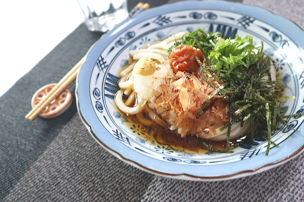

Ume-oroshi Udon

Description
The citric acid in the sour plum has a stimulating effect on the appetite. This is a great recipe for when it's hot outside and you don't feel like eating.
Ingredients
For the cold udon soup:
- 75ml water
- 15ml mirin
- 15ml soy sauce
- A dash of dashinomoto (bonito fish soup stock)
- Pinch of sugar
Noodles and toppings:
- 100g dried udon noodles
- 1 umeboshi (pickled plum)>
- 1 shiso leaf
- 5cm daikon radish
- Some sesame seeds
- Pinch of katsuobushi (bonito flakes)
- Some nori (seaweed)
- Small piece of ginger, grated
- A little chopped green onion
Method
- Combine the soup ingredients in a pan and bring to the boil.
- Once boiled, cool the soup.
- Boil the udon as per packet instructions. Once cooked, cool rinse with cold water and cool with ice.
- Finely chop the green onions and shiso leaf. Peel and grate the daikon.
- Add the noodles to a bowl, and add umeboshi, shiso, daikon, and then the rest of the toppings. Adjust the quantities of each to your personal taste.
- Add the chilled soup stock and enjoy!